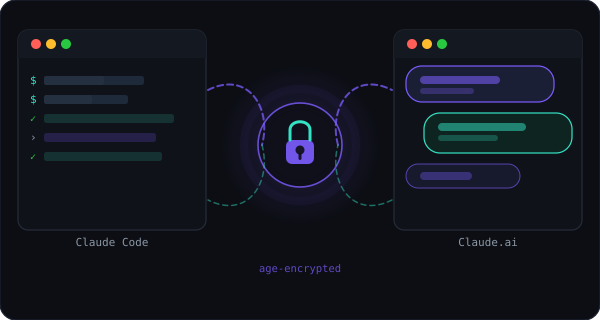
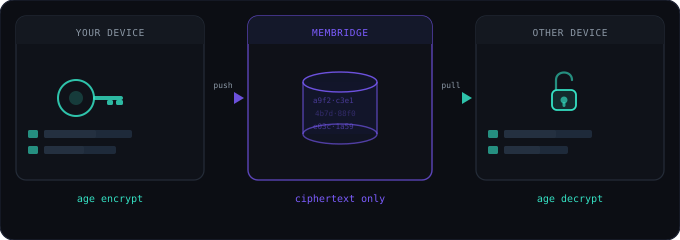
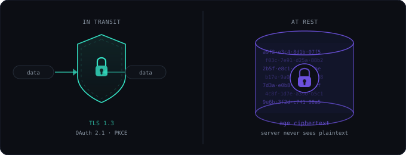

One encrypted memory.
Everywhere Claude works.
Keep your notes, decisions, and rules in sync between Claude Code and Claude.ai — stored as ciphertext, exposed as a standard MCP server.
# install memb CLI $ curl -fsSL https://membridge.yaro.fr/install | bash $ memb configure mem_YOUR_KEY # after signing in $ claude mcp add --transport http membridge https://membridge.yaro.fr/mcp $ memb push ✓ context encrypted and synced. > use membridge to add a note: "ship the v2 API by Friday" ✓ note added — visible next time Claude Code pulls.
Same context, two clients, zero copy-paste
One ciphertext blob per user. Both Claude surfaces read and write it through the same MCP tools.
CLI push / pull
encrypted storage
MCP tool calls

Sign in with GitHub
OAuth login issues a scoped API key. No passwords, no separate account system.
Encrypted with age
The CLI encrypts fully client-side — your key never leaves your machine. MCP tool calls send the key over TLS so the server can decrypt on your behalf — never persisted.
Sync through one tiny API
A single ciphertext row per user. push/pull from the CLI, get_context/add_note/search from MCP.
Auto-push with a Claude Code Stop hook
Add this to ~/.claude/settings.json — your context is pushed silently every time a session ends, no manual memb push needed.
// ~/.claude/settings.json { "hooks": { "Stop": [{ "hooks": [{ "type": "command", "command": "memb push --silent 2>/dev/null || true" }] }] } }
Encrypted at rest. Standards-based in transit.
No custom auth scheme to audit — OAuth 2.1, PKCE, and dynamic client registration, all over TLS.

age encryption
Context is stored as ciphertext only. The CLI's push/pull
are end-to-end — the server never sees your key. MCP tool calls pass the key as an argument over TLS
so the server can decrypt on your behalf (necessary for Claude.ai web, which has no local crypto) —
never persisted, but not zero-knowledge. MCP tools work in interactive Claude Code sessions;
non-interactive subprocesses (claude -p) do not inherit MCP auth.
GitHub OAuth + API keys
Identity comes from GitHub OAuth. API keys are sha256-hashed in the database — the raw key is shown exactly once at signup and never retrievable again. Revoke and reissue any time.
OAuth 2.1 + PKCE for MCP
Claude Code and Claude.ai authorize via standard dynamic client registration and PKCE — no manually-managed client secrets, no shared passwords. The authorization server is the MemBridge server itself.
Rate limited
Per-user sliding window rate limiting (100 req/hr) protects the API from runaway clients. Excess requests get a 429 with a clear error message.
No plaintext ever stored
The database only holds the encrypted blob and its byte size. There are no logs of context content, no S3 backups of plaintext, no admin interface that could expose your data.
Self-host it in one docker compose up
One server, one database, no managed services. Don't want to run your own? use the free hosted instance instead.

$ git clone https://github.com/TidyMaze/membridge && cd membridge $ cp .env.example .env # set GH_CLIENT_ID / SECRET / BASE_URL $ docker compose up -d --build ✓ http://localhost:3000/health → {"ok":true} # install the CLI $ curl -fsSL https://your-domain.com/install | bash $ memb configure mem_YOUR_KEY $ claude mcp add --transport http membridge https://your-domain.com/mcp